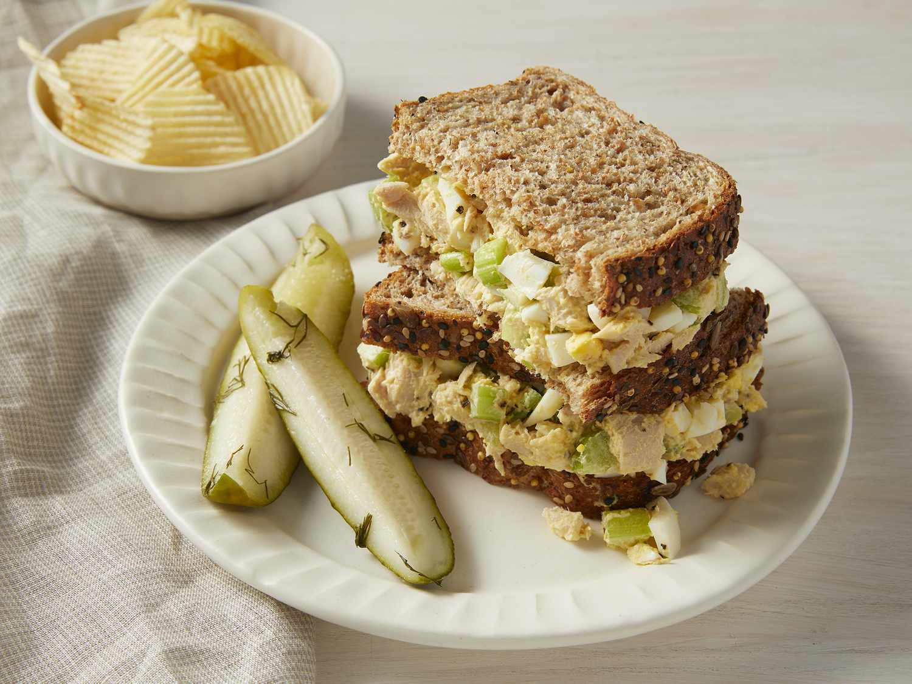

Tuna and Egg Sandwich Recipe

Description
In this recipe, we will be preparing a tuna and egg sandwich. The twist is that we will
be frying the egg in the pan with the toast on top so they stick together and form a neat
little sandwich. Once we flip it over in the pan, we can add our tuna and easily fold the
sandwich together before dishing to a plate. An easy, no frills, tuna sandwich!
Ingredients
- Canned Tuna
- Egg Whites
- White Bread
- Greek Yogurt
- Avocado Puree
Steps
- Begin toasting your bread
- Combine tuna, greek yogurt, and avocado puree into a bowl
- Heat pan on medium heat and pour in egg whites
- Place toast on top of egg white in pan
- Once solidified, flip egg and toast in pan
- Add tuna bowl ingredients to open face sandwich
- Fold sandwich together and serve
Home